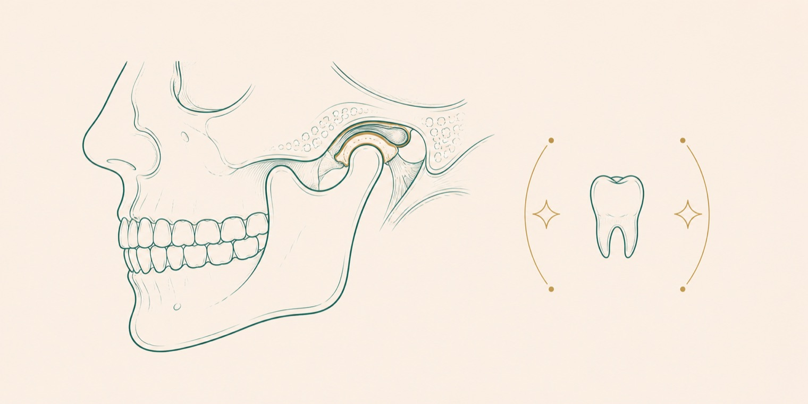

Bu birim iki ayrı alanı kapsar: çene eklemi (temporomandibular eklem) rahatsızlıklarının değerlendirilmesi ve çocuk hastaların kendilerine ayrılmış bir düzende muayene ve tedavisi. Her ikisi de özel bir yaklaşım ve sabır gerektirir.
Çene eklemi rahatsızlıkları
Çene eklemi, alt çeneyi kafatasına bağlayan ve gün boyunca en sık kullanılan eklemlerden biridir. Bu eklemdeki rahatsızlıklar; çene ağrısı, açıp kapatırken ses gelmesi, çiğnemede zorluk ve baş ağrısı gibi belirtilerle ortaya çıkabilir. Değerlendirme, gerektiğinde ilgili tıp branşlarıyla birlikte yapılır.
Diş sıkma ve gıcırdatma (bruksizm)
Çoğunlukla uyku sırasında görülen diş sıkma ve gıcırdatma, dişlerde aşınmaya, çene ekleminde zorlanmaya ve baş ağrısına yol açabilir. Tedavide, dişleri koruyan gece plakları sık kullanılan bir yöntemdir. Belirtilerin altında yatan etkenler de birlikte değerlendirilir.
Çocuk diş hekimliği neden ayrı bir alandır?
Çocukların diş sağlığı, süt dişlerinden kalıcı dişlere geçiş sürecini ve bu döneme özgü ihtiyaçları içerir. Çocuk hastaların diş hekimine olumlu bir alışkanlık geliştirmesi, ömür boyu ağız sağlığı için önemlidir. Bu nedenle çocuklar ayrı bir düzende, kendilerine uygun bir yaklaşımla muayene ve tedavi edilir.
Süt dişleri ve koruyucu uygulamalar
Süt dişleri, kalıcı dişlerin yer tutucusu olarak önemli bir işlev görür; erken kaybı ileride diş dizilim sorunlarına yol açabilir. Çürükten korunmada florür uygulamaları ve fissür örtücüler, bilimsel olarak etkinliği gösterilmiş yöntemlerdir [1]. Amerikan Çocuk Diş Hekimliği Akademisi, ilk diş muayenesinin ilk dişin sürmesini izleyen dönemde yapılmasını önermektedir [1].
İlk muayene ve alışkanlık
Erken yaşta yapılan ilk muayene, hem olası sorunların erken fark edilmesini sağlar hem de çocuğun diş hekimiyle olumlu bir ilişki kurmasına yardımcı olur. Düzenli kontroller, çocukluk çağı çürüklerinin önlenmesinde en etkili adımlardandır.
Sık sorulan sorular
Diş sıkma nasıl anlaşılır?
Sabah çene yorgunluğu veya baş ağrısıyla uyanmak, dişlerde aşınma ve çevredekilerin gece gıcırdatma sesi duyması başlıca işaretlerdir. Belirtiler varsa hekim değerlendirmesi önerilir; gece plağı sık kullanılan bir çözümdür.
Süt dişi çürüğü tedavi edilmeli mi?
Evet. Süt dişleri geçici olsa da kalıcı dişler için yer tutar ve çiğneme işlevini görür. Tedavi edilmeyen çürükler ağrıya, enfeksiyona ve kalıcı dişlerde dizilim sorunlarına yol açabilir.
Çocuğumu ilk kez ne zaman diş hekimine getirmeliyim?
İlk diş muayenesinin, ilk dişin sürmesini izleyen dönemde yapılması önerilir. Erken tanışma, hem koruyucu bakımı başlatır hem de çocuğun diş hekimine olumlu alışmasını sağlar.
Çene ekleminde ses gelmesi veya kilitlenme ciddi bir durum mu?
Çene ekleminde tıklama sesi, ağrı veya açıp kapamada zorlanma, çene eklemi rahatsızlığının belirtisi olabilir. Bu şikayetler her zaman ciddi olmasa da değerlendirilmesi önerilir. Muayene ve gerekli görüntülemeyle uygun yaklaşım hekim tarafından belirlenir.
Çocuğumun süt dişi erken düşerse sorun olur mu?
Süt dişleri, kalıcı dişler için yer koruyucu görevi görür. Erken kayıp, kalıcı dişin sürme düzenini etkileyebilir. Bu durumda yer tutucu gibi çözümler değerlendirilebilir; karar çocuğun ağız yapısına göre hekim tarafından verilir.
Çocuklarda diş sıkma normal midir, tedavi gerekir mi?
Çocukluk döneminde diş sıkma veya gıcırdatma zaman zaman görülebilir ve bir kısmı gelişimle birlikte azalır. Diş aşınması, ağrı veya uyku düzeninde etkilenme varsa değerlendirme önerilir. Uygun yaklaşım muayene sonrasında belirlenir.
Çene eklemi şikayetleri diş sıkmayla ilişkili olabilir mi?
Diş sıkma ve gıcırdatma, çene eklemi ve çevre kaslar üzerinde yük oluşturarak şikayetlere katkıda bulunabilir. İlişkinin derecesi kişiden kişiye değişir. Muayenede hem eklem hem de kapanış birlikte değerlendirilir.
Kaynakça
- American Academy of Pediatric Dentistry (Amerikan Çocuk Diş Hekimliği Akademisi). First visit ve preventive care. aapd.org
- American Dental Association. TMJ disorders ve children's oral health, MouthHealthy portalı. mouthhealthy.org
Bu tedavi hakkında soru sormak ister misiniz? Diş hekimlerimize dilediğiniz saatte yazabilirsiniz.
Bize yazın